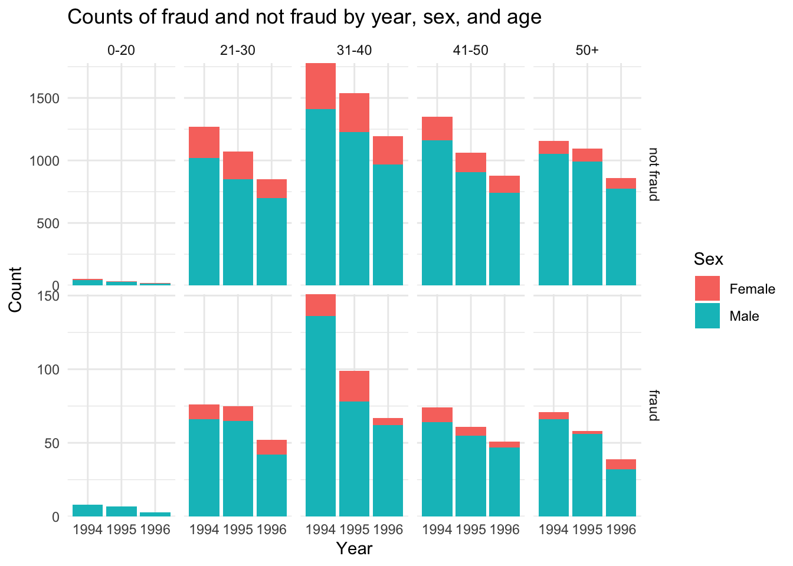
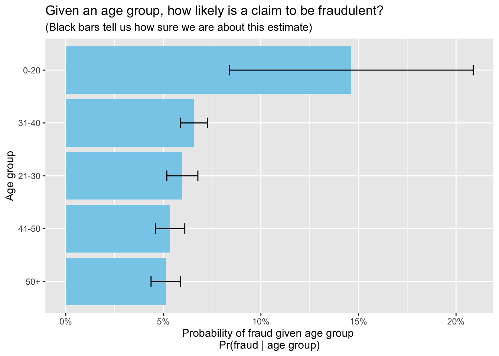

# read in data
# fraud_oracle.csv from Kaggle, see README.md
df <- read.csv("data/fraud_oracle.csv",
header = TRUE,
stringsAsFactors = TRUE,
check.names = FALSE) Vehicle Fraud Detection
1 Descriptive analysis of dataset
1.1 Data collection
1.2 Data preprocessing
# initial check for missing values: none found
sum(sapply(df, function(x) sum(is.na(x))))[1] 0Though there are no missing values in this dataset, there are a few errors and inconsistencies we need to fix: some misspellings/typos, inconsistency in variable naming conventions, a meaningless variable PolicyNumber, and two variables PoliceReportFiled and WitnessPresent that are coded as character strings, but should function as Boolean types.
Data cleaning:
# clean up data
df <- df |>
# fix typos and standardize variable name conventions
mutate(Make = recode(Make,
"Accura" = "Acura",
"Mecedes" = "Mercedes",
"Nisson" = "Nissan",
"Porche" = "Porsche")) |>
rename(NumberOfSupplements = NumberOfSuppliments,
AddressChangeClaim = AddressChange_Claim,
DaysPolicyClaim = Days_Policy_Claim,
DaysPolicyAccident = Days_Policy_Accident,
FraudFoundP = FraudFound_P) |>
# PolicyNumber doesn't add any meaningful information, remove it
select(!PolicyNumber) |>
# PoliceReportFiled and WitnessPresent are really Booleans
mutate(PoliceReportFiled = as.logical(recode(PoliceReportFiled,
'No' = 0, 'Yes' = 1)),
WitnessPresent = as.logical(recode(WitnessPresent,
'No' = 0, 'Yes' = 1)))Data inspection:
# function to get descriptive info about each variable
variable_info <- function(df) {
n_rows <- nrow(df)
tab <- tibble(
variable = names(df),
class = map_chr(df, ~ class(.x)),
n_unique = map_int(df, ~ n_distinct(.x)),
# run a custom function on each column to get character vector of
# values for each column that appear in descending order of counts
values_descending = map_chr(df, ~ {
tab <- sort(table(as.character(.x)), decreasing = TRUE)
if (length(tab) == 0) return(NA_character_)
paste0(names(tab), collapse = ", ")
})
)
return(tab)
}
kable(variable_info(df))| variable | class | n_unique | values_descending |
|---|---|---|---|
| Month | factor | 12 | Jan, May, Mar, Jun, Oct, Dec, Apr, Feb, Jul, Sep, Nov, Aug |
| WeekOfMonth | integer | 5 | 3, 2, 4, 1, 5 |
| DayOfWeek | factor | 7 | Monday, Friday, Tuesday, Thursday, Wednesday, Saturday, Sunday |
| Make | factor | 19 | Pontiac, Toyota, Honda, Mazda, Chevrolet, Acura, Ford, VW, Dodge, Saab, Mercury, Saturn, Nissan, BMW, Jaguar, Porsche, Mercedes, Ferrari, Lexus |
| AccidentArea | factor | 2 | Urban, Rural |
| DayOfWeekClaimed | factor | 8 | Monday, Tuesday, Wednesday, Thursday, Friday, Saturday, Sunday, 0 |
| MonthClaimed | factor | 13 | Jan, May, Mar, Oct, Jun, Feb, Nov, Apr, Sep, Jul, Dec, Aug, 0 |
| WeekOfMonthClaimed | integer | 5 | 2, 3, 1, 4, 5 |
| Sex | factor | 2 | Male, Female |
| MaritalStatus | factor | 4 | Married, Single, Divorced, Widow |
| Age | integer | 66 | 30, 33, 34, 35, 28, 29, 31, 32, 27, 26, 39, 41, 44, 37, 36, 43, 42, 45, 38, 40, 0, 47, 46, 48, 50, 54, 55, 51, 52, 49, 53, 60, 56, 64, 61, 57, 59, 63, 24, 65, 58, 21, 22, 23, 62, 25, 18, 72, 66, 76, 71, 74, 78, 75, 19, 68, 69, 73, 80, 67, 77, 20, 70, 79, 16, 17 |
| Fault | factor | 2 | Policy Holder, Third Party |
| PolicyType | factor | 9 | Sedan - Collision, Sedan - Liability, Sedan - All Perils, Sport - Collision, Utility - All Perils, Utility - Collision, Sport - All Perils, Utility - Liability, Sport - Liability |
| VehicleCategory | factor | 3 | Sedan, Sport, Utility |
| VehiclePrice | factor | 6 | 20000 to 29000, 30000 to 39000, more than 69000, less than 20000, 40000 to 59000, 60000 to 69000 |
| FraudFoundP | integer | 2 | 0, 1 |
| RepNumber | integer | 16 | 7, 9, 1, 5, 10, 12, 15, 16, 2, 3, 11, 6, 14, 8, 4, 13 |
| Deductible | integer | 4 | 400, 700, 500, 300 |
| DriverRating | integer | 4 | 1, 3, 2, 4 |
| DaysPolicyAccident | factor | 5 | more than 30, 8 to 15, none, 15 to 30, 1 to 7 |
| DaysPolicyClaim | factor | 4 | more than 30, 15 to 30, 8 to 15, none |
| PastNumberOfClaims | factor | 4 | 2 to 4, none, 1, more than 4 |
| AgeOfVehicle | factor | 8 | 7 years, more than 7, 6 years, 5 years, new, 4 years, 3 years, 2 years |
| AgeOfPolicyHolder | factor | 9 | 31 to 35, 36 to 40, 41 to 50, 51 to 65, 26 to 30, over 65, 16 to 17, 21 to 25, 18 to 20 |
| PoliceReportFiled | logical | 2 | FALSE, TRUE |
| WitnessPresent | logical | 2 | FALSE, TRUE |
| AgentType | factor | 2 | External, Internal |
| NumberOfSupplements | factor | 4 | none, more than 5, 1 to 2, 3 to 5 |
| AddressChangeClaim | factor | 5 | no change, 4 to 8 years, 2 to 3 years, 1 year, under 6 months |
| NumberOfCars | factor | 5 | 1 vehicle, 2 vehicles, 3 to 4, 5 to 8, more than 8 |
| Year | integer | 3 | 1994, 1995, 1996 |
| BasePolicy | factor | 3 | Collision, Liability, All Perils |
Dealing with odd values
Though we had already confirmed there are no missing values in this dataset, a few columns have some unexpected values of 0: DayOfWeekClaimed, MonthClaimed, Age. Note that as the variable Age refers to the age of the policyholder, 0 does not make sense as a value for any of these variables.
# table that indicates how many times a value of 0 or "0" appears in each column
tab_zeroes <- df |>
select(all_of(c("DayOfWeekClaimed", "MonthClaimed", "Age"))) |>
summarise(across(everything(), ~ sum(as.character(.) == "0"))) |>
pivot_longer(everything(), names_to = "variable", values_to = "count")
kable(tab_zeroes)| variable | count |
|---|---|
| DayOfWeekClaimed | 1 |
| MonthClaimed | 1 |
| Age | 320 |
Most of the values of 0 are in the Age column. When considering how to treat these values that are effectively missing values, unfortunately we are not able to speak to the data owner or source to understand where these values might have come from, which could help inform the decision about how to handle them. Additionally, there is no obvious reasonable method of imputation here. Thus, since 320 values comprise only 2.08% of the entire dataset of 15420 values and therefore a very small proportion, we will drop the rows that have these values of 0.
df <- df |>
filter(!if_any(all_of(c("DayOfWeekClaimed", "MonthClaimed", "Age")),
~ coalesce(as.character(.) == "0")))Now we can perform some exploratory data analysis.
2 Exploratory Data Analysis (EDA)
2.1 Year, age, and sex
# visualize distribution of sex and age for both cases of fraud and not fraud
df_year_sex_age <- df |>
mutate(AgeGroup = cut(Age,
breaks = c(0, 20, 30, 40, 50, 100),
labels = c("0-20", "21-30", "31-40", "41-50", "50+")),
FraudFoundP = factor(FraudFoundP, levels = c(0, 1), labels = c("not fraud", "fraud")))
gg_year_sex_age <- ggplot(df_year_sex_age, aes(x = factor(Year), fill = Sex)) +
geom_bar() +
labs(
x = "Year",
y = "Count",
fill = "Sex",
title = "Counts of fraud and not fraud by year, sex, and age") +
theme_minimal() +
facet_grid(FraudFoundP ~ AgeGroup, scales = "free_y") +
scale_y_continuous(expand = c(0, 0))
gg_year_sex_age
Interpretation: Across both genders, claims that were found to be fraud or not, and all age groups (with the exception of between 1994 and 1995 for cases of fraud amongst 21-30 year-olds), numbers of claims decreased steadily from 1994 to 1996, the range of this dataset. Note that the Sex variable refers only to the gender of the policy holder, and therefore the proportion of gender is consistent across claims that were found to be fraud or not.
2.2 Conditional on age
To look at the relationship between fraud and age more clearly, let’s visualize the probability of fraud given each age group:
# compute fraud rate (and 95% CI) given an age group
df_by_age <- df |>
mutate(
AgeGroup = cut(Age, breaks = c(0,20,30,40,50,100),
labels = c("0-20","21-30","31-40","41-50","50+"))
) |>
group_by(AgeGroup) |>
summarise(
n = n(),
frauds = sum(FraudFoundP),
fraud_rate = frauds / n,
.groups = "drop"
) |>
# get SDs and CIs for the estimate of true population prop from this sample
mutate(se = sqrt(fraud_rate * (1 - fraud_rate) / pmax(n, 1)),
sd = sd(fraud_rate),
ci_low = pmax(0, fraud_rate - 1.96 * se),
ci_high = pmin(1, fraud_rate + 1.96 * se)
) |>
ungroup() |>
arrange(desc(fraud_rate)) |>
mutate(across(c(fraud_rate, sd, ci_low, ci_high), ~ round(., 4))) |>
mutate(ci_interval = paste0("(", ci_low, ", ", ci_high, ")" ))
gg_age <- ggplot(df_by_age, aes(x = reorder(AgeGroup, fraud_rate), y = fraud_rate)) +
geom_col(fill = "skyblue") +
geom_errorbar(aes(ymin = ci_low, ymax = ci_high), width = 0.2) +
coord_flip() +
scale_y_continuous(labels = percent_format(accuracy = 1)) +
labs(
x = "Age group",
y = "Probability of fraud given age group \nPr(fraud | age group)",
title = "Given an age group, how likely is a claim to be fraudulent?",
subtitle = "(Black bars tell us how sure we are about this estimate)")
gg_age
df_by_age_nice <- df_by_age |>
mutate(percent_fraud = fraud_rate*100,
sd_nice = sd*100,
ci_low_nice = ci_low*100,
ci_high_nice = ci_high*100) |>
mutate(ci_interval = paste0("(", ci_low, ", ", ci_high, ")" )) |>
select(AgeGroup, n, frauds, percent_fraud, sd_nice, ci_interval)
kable(df_by_age_nice)| AgeGroup | n | frauds | percent_fraud | sd_nice | ci_interval |
|---|---|---|---|---|---|
| 0-20 | 123 | 18 | 14.63 | 4.01 | (0.0839, 0.2088) |
| 31-40 | 4828 | 317 | 6.57 | 4.01 | (0.0587, 0.0726) |
| 21-30 | 3396 | 203 | 5.98 | 4.01 | (0.0518, 0.0677) |
| 41-50 | 3475 | 186 | 5.35 | 4.01 | (0.046, 0.061) |
| 50+ | 3278 | 168 | 5.13 | 4.01 | (0.0437, 0.0588) |
The age group of 0-20 year-olds has the highest proportion of fraudulent claims as compared to any other age group by a significant margin - at around 14.6%, about twice as high a rate as the next highest group, 31-40 year-olds. However, note the very wide 95% confidence interval, which is due to a sample size of \(n = 123\), comparatively very low when compared when the sample sizes in the other age groups, which range from 3,278 to 4,828. Even with the greater uncertainty around our estimate of the true proportion of fraud amongst claims where the policyholder is under 20 years old, it is still worth paying attention to this statistic. A sample size of 123 is small, but not insignificant, and there are reasons to believe that this age group may have higher rates of fraud when compared to older policyholders: teenagers typically have less financial means than older individuals, and also may be more inclined to take the risk of making a fraudulent claim.
Policyholders in their 30s are the next most likely to have made a fraudulent claim, at a rate of 6.6%, with the 21-30 year-old age group close behind at 5.9%. Beyond 40 years old, the trend seems to decline with older policyholders, though it is worth noting that the differences are small.
2.3 Proportions of fraud by car make (MAKE SURE THIS ALL MAKES SENSE)
# look at the proportion of fraud by each make of car
make_summary <- df |>
group_by(Make) |>
summarize(
n = n(),
frauds = sum(FraudFoundP),
prop = mean(FraudFoundP)
) |>
# get SDs and CIs for the estimate of true population prop from this sample
mutate(se = sqrt(prop * (1 - prop) / pmax(n, 1)),
sd = sd(prop),
ci_low = pmax(0, prop - 1.96 * se),
ci_high = pmin(1, prop + 1.96 * se)
) |>
ungroup() |>
arrange(desc(prop)) |>
# round decimals and make proportion a percentage for easier reading
# for non-technical audience, adjust SD and CI accordingly
mutate(across(c(prop, sd, ci_low, ci_high), ~ round(., 2))) |>
mutate(prop_percent = prop*100,
sd = sd*100,
ci_low = ci_low*100,
ci_high = ci_high*100) |>
mutate(ci_interval = paste0("(", ci_low, ", ", ci_high, ")" )) |>
select(Make, n, frauds, prop_percent, sd, ci_interval)
kable(make_summary)| Make | n | frauds | prop_percent | sd | ci_interval |
|---|---|---|---|---|---|
| Mercedes | 4 | 1 | 25 | 6 | (0, 67) |
| Acura | 472 | 59 | 12 | 6 | (10, 15) |
| Saturn | 58 | 6 | 10 | 6 | (3, 18) |
| Saab | 108 | 11 | 10 | 6 | (4, 16) |
| Ford | 450 | 33 | 7 | 6 | (5, 10) |
| Mercury | 83 | 6 | 7 | 6 | (2, 13) |
| BMW | 15 | 1 | 7 | 6 | (0, 19) |
| Honda | 2482 | 148 | 6 | 6 | (5, 7) |
| Toyota | 3121 | 186 | 6 | 6 | (5, 7) |
| Chevrolet | 1681 | 94 | 6 | 6 | (4, 7) |
| Pontiac | 3837 | 213 | 6 | 6 | (5, 6) |
| Mazda | 2354 | 123 | 5 | 6 | (4, 6) |
| Nissan | 30 | 1 | 3 | 6 | (0, 10) |
| VW | 283 | 8 | 3 | 6 | (1, 5) |
| Dodge | 108 | 2 | 2 | 6 | (0, 4) |
| Ferrari | 2 | 0 | 0 | 6 | (0, 0) |
| Jaguar | 6 | 0 | 0 | 6 | (0, 0) |
| Lexus | 1 | 0 | 0 | 6 | (0, 0) |
| Porsche | 5 | 0 | 0 | 6 | (0, 0) |
A handful of car makes have very low counts in this sample of claims: Mercedes, Ferrari, Jaguar, Lexus, Porsche. While Mercedes has the highest proportion of fraud per claim at 25%, since that proportion comes from only 4 total claims with 1 case of fraud, we cannot consider it a reliable estimate of the proportion of fraudulent claims in the greater population of Mercedes claims. Since the other makes have total claims less than 7, and 0 counts of fraud,
BMW and Nissan are also relatively low compared to the top handful of makes. Those will be dropped,
#find and discard makes with n > 6
make_summary2 <- make_summary |>
filter(n > 6)
make_summary2# A tibble: 14 × 6
Make n frauds prop_percent sd ci_interval
<fct> <int> <int> <dbl> <dbl> <chr>
1 Acura 472 59 12 6 (10, 15)
2 Saturn 58 6 10 6 (3, 18)
3 Saab 108 11 10 6 (4, 16)
4 Ford 450 33 7 6 (5, 10)
5 Mercury 83 6 7 6 (2, 13)
6 BMW 15 1 7 6 (0, 19)
7 Honda 2482 148 6 6 (5, 7)
8 Toyota 3121 186 6 6 (5, 7)
9 Chevrolet 1681 94 6 6 (4, 7)
10 Pontiac 3837 213 6 6 (5, 6)
11 Mazda 2354 123 5 6 (4, 6)
12 Nissan 30 1 3 6 (0, 10)
13 VW 283 8 3 6 (1, 5)
14 Dodge 108 2 2 6 (0, 4) 3 Logistic regression
Whether or not a claim is found to be fradulent is binary outcome, so we’ll look at a logistic regression model.